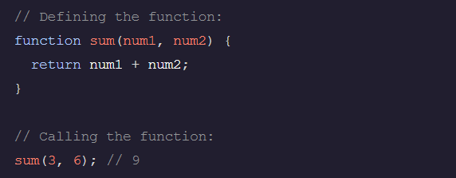
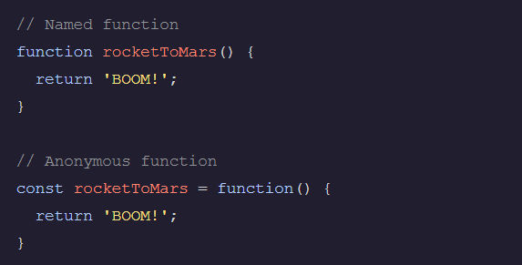
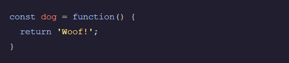
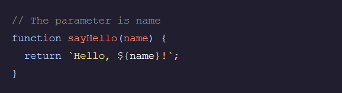
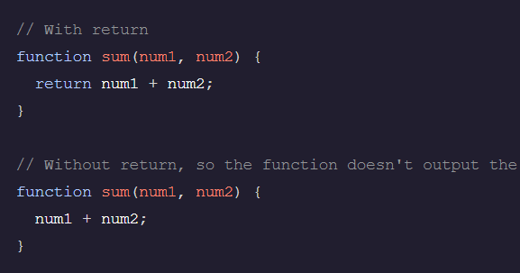
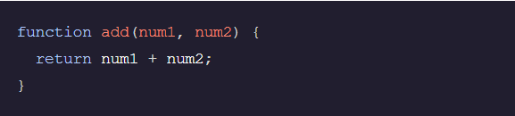
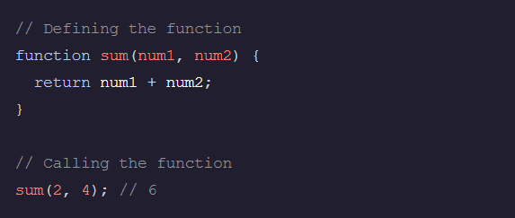

Functions
Functions are one of the fundamental building blocks in JavaScript. A function is a reusable set of statements to perform a task or calculate a value. Functions can be passed one or more values and can return a value at the end of their execution. In order to use a function, you must define it somewhere in the scope where you wish to call it.
Anonymous functions
Anonymous functions in JavaScript do not have a name property. They can be defined using the function keyword.
Function Expressions
Function expressions create functions inside an expression instead of as a function declaration. They can be anonymous and/or assigned to a variable.
Function Parameters
Inputs to functions are known as parameters when a function is declared or defined. Parameters are used as variables inside the function body. When the function is called, these parameters will have the value of whatever is passed in as arguments. It is possible to define a function without parameters.
return Keyword
Functions return (pass back) values using the return keyword. return ends function execution and returns the specified value to the location where it was called. A common mistake is to forget the return keyword, in which case the function will return undefined by default.
Function Declaration
Function declarations are used to create named functions. These functions can be called using their declared name.
Calling Functions
Functions can be called, or executed, elsewhere in code using parentheses following the function name. When a function is called, the code inside its function body runs. Arguments are values passed into a function when it is called.
